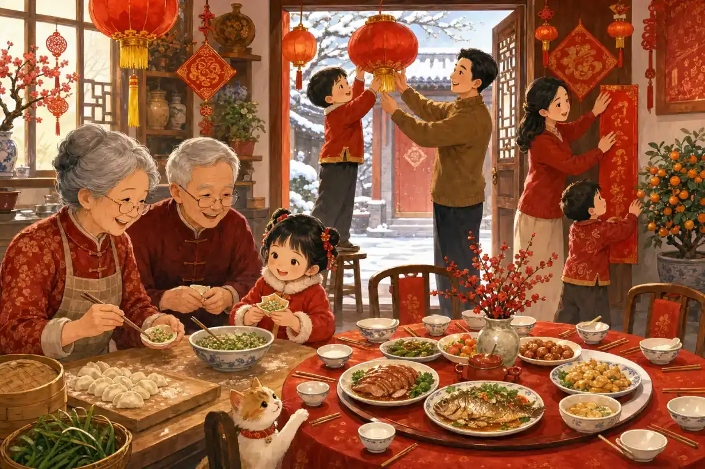
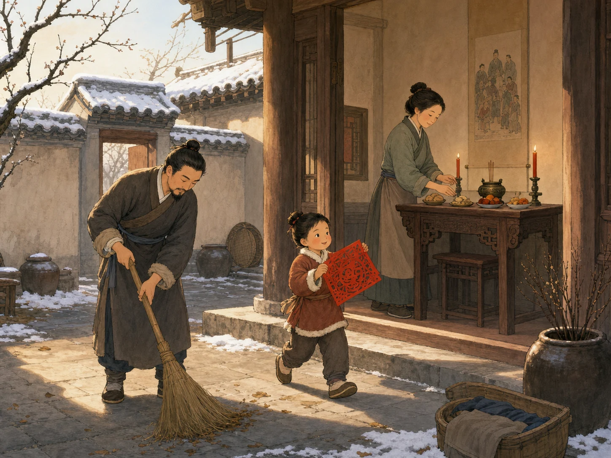
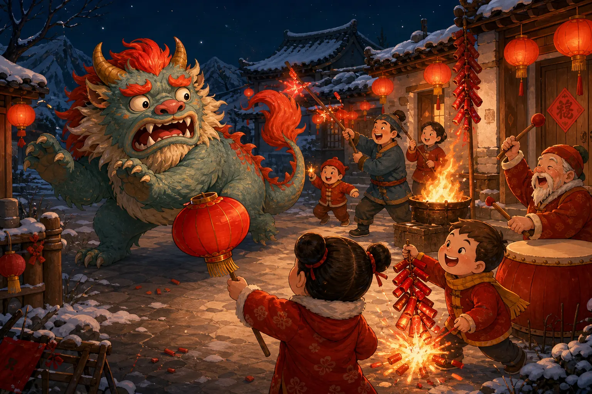
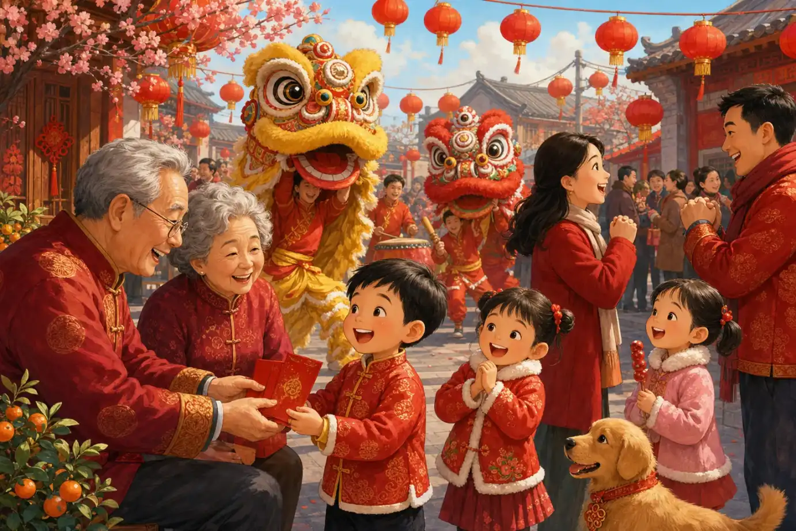

春节
Spring Festival
Page 1
什么是春节？
What Is Spring Festival?

When Spring Festival arrives, many families put up red couplets, hang lanterns, make dumplings, and prepare the reunion dinner together.
春节，也叫中国新年，是中国最重要的传统节日之一。
春节快到的时候，很多人会回家。大家一起贴春联、挂灯笼、包饺子，还会准备一顿热热闹闹的年夜饭。
所以春节最重要的事情，不只是过新年，也是家人重新坐到一起。
Spring Festival, also called Chinese New Year, is one of the most important traditional holidays in China.
When the festival is near, many people travel home. Families put up red couplets, hang lanterns, make dumplings, and get ready for a big reunion dinner.
So the most important part of Spring Festival is not only the new year. It is also family coming back together.
Page 2
春节是怎么来的？
How Did Spring Festival Begin?

Long ago, before the new year, families cleaned the home, prepared to honor their ancestors, and got ready for a fresh beginning.
很久以前，中国人会在农历一年的最后一个月祭祖，也会认真打扫房屋、洗浴整理，准备迎接新一年。
那时候，地里的农活差不多做完了，人们终于有了一点空闲时间。大家一边感谢祖先，一边准备新的日子开始。
对那时候的人来说，春天来了，是一件特别重要的事。天气会慢慢变暖，草木会重新长出来，人们也可以开始准备新的耕种和新的生活。
所以大家不只是高兴“又过了一年”，也高兴寒冷的冬天快过去了，明亮、暖和的日子要回来了。
后来，这些祭祖、扫除、迎春的习惯慢慢连在一起，变成了今天的春节。
所以春节不只是换了一个新年份，也像在说：冬天快过去了，新的开始来了。
Long ago, in the last month of the lunar year, Chinese families honored their ancestors. They also cleaned their homes and got themselves ready for a new year.
By then, most of the farm work was nearly finished, so people finally had a little free time. They thanked the people who came before them and prepared for a fresh beginning.
For people in those days, the coming of spring was very important. The weather would grow warmer, plants would begin to grow again, and families could get ready for new farming and a new year of life.
So people were not only happy that one year was ending and another was beginning. They were also happy that the cold winter was almost gone, and bright, warm days were coming back.
Slowly, these customs of honoring ancestors, cleaning up, and welcoming spring came together and became today's Spring Festival.
So Spring Festival is not only about a new year on the calendar. It also feels like saying: winter is passing, and a new beginning is here.
Page 3
年兽的故事
The Story of Nian

In the old story, people scared Nian away with the color red, bright fire, and loud sounds.
传说里，很久以前有一只怪兽叫“年”。每到一年快结束的时候，它就会跑到村子里来，吓坏大家。
一听说年兽要来了，村里的人就会早早关上门，躲在家里，心里紧张得不得了。谁也不知道该怎么把它赶走。
有一年，有人发现年兽看见红色会停下来，看见火光会后退，听见很大的声音还会吓一跳。后来，人们慢慢明白，它害怕三样东西：红色、火光，还有很大的声音。
于是大家贴上红纸，挂起灯笼，点起火，还放很响的鞭炮。年兽一听见、一看见，就转身逃跑了，再也不敢轻易靠近村子。
这就是为什么很多人一想到春节，就会想到红色、灯笼和热热闹闹的声音。
In an old story, there was a monster named Nian. Each time the year was ending, it came into the village and frightened everyone.
When people heard that Nian was coming, they shut their doors early and hid inside their homes. Everyone felt nervous, and nobody knew how to send it away.
One year, someone noticed that Nian stopped when it saw red, stepped back from bright fire, and jumped at loud noises. Little by little, people understood that Nian was afraid of three things: the color red, bright fire, and loud sounds.
So the villagers put up red paper, hung lanterns, lit fires, and set off noisy firecrackers. As soon as Nian saw and heard these things, it turned around and ran away, and it did not dare come close to the village so easily again.
That is why many people think of red, lanterns, and cheerful noise when they think of Spring Festival.
Page 4
今天人们怎么过春节？
How Do People Celebrate Today?

Today, many families share a reunion dinner, give New Year greetings, watch lion dances, and receive red envelopes and good wishes.
今天，很多家庭会一起吃团圆饭，也会去拜年，对家人朋友说“新年快乐”。
孩子常常会收到红包，街上有时候还能看到舞狮和灯笼，到处都是热闹又开心的样子。
不管每个地方怎么过，春节里最常见的东西还是一样：团圆、祝福，还有对新一年的希望。
Today, many families share a reunion dinner and visit others to give New Year greetings.
Children often receive red envelopes, and in some places people can watch lion dances and see lanterns everywhere.
Different places may celebrate a little differently, but the most common ideas stay the same: togetherness, good wishes, and hope for the new year.
春节快乐！
Happy Spring Festival!
春节是一个关于团圆、希望和新开始的节日。
当灯笼亮起来的时候，人们也把祝福送给家人和朋友。
Spring Festival is a holiday about family reunion, hope, and a new beginning.
When the lanterns glow, people also send good wishes to family and friends.